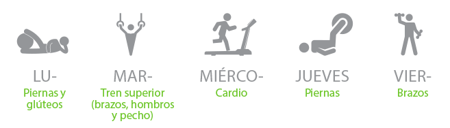

Diana Moreno
Por: Paola Reyes
Agradecemos a:
BLACK FITNESS BOGOTÁ
por la locación,
Calle 119 N. 12 – 55 piso 3
Visítalos en Instagram
@blakfitnessbogota
@dianamore_fit
MARIA CARIOCA FIT
por el vestuario visítalos en Instagram
@mariacariocafit y en su sitio web
www.mariacarioca.com.co
 @blackfitnessbogota – @dianamore_fit
@blackfitnessbogota – @dianamore_fit
 @Dianamoreno0306
@Dianamoreno0306
Nació en Valledupar
Edad: 41 años
Medidas: 91 – 90 – 94
Peso: 53 kg
Estatura: 1,62m
Cuando tenía 21 años decidió no seguir estudiando Cine y Televisión para involucrarse en el mundo fitness. Inicialmente entró al gimnasio con la finalidad de “sacar pierna y curvas”, pues era muy delgada y pesaba apenas 44 kilos.
Hoy los resultados se ven a simple vista. Diana se siente satisfecha con su figura, además, se convirtió en entrenadora y referente para muchas personas que cambiaron su estilo de vida, dejando atrás el sedentarismo, el alcohol, el trasnocho, el cigarrillo y la mala alimentación.
Pero hay que ser claros, lo primero que debe hacer una persona que quiera llevar una vida saludable, es tener una mentalidad de entrega y amor por el ejercicio, es decir, primero transformar su mente y luego su cuerpo.
{kind=link}
{kind=link}
{kind=link}
{kind=link}
{kind=link}
{kind=link}
{kind=link}
{kind=link}
Si se quiere adelgazar y mantener una silueta bonita y firme, es importante no dejar de hacer ejercicio, alimentarse cinco veces al día, solo ingerir un carbohidrato a diario y eliminar por completo los dulces y los fritos. Diana afirma que no se deben hacer dietas, pues éstas siempre generan un efecto rebote en el organismo.
También recomienda los batidos, pues dicen que son nutritivos, refrescantes y algunos ayudan a bajar de peso. Su favorito es el que contiene espinaca, manzana verde, jengibre, pepino y brócoli, dice que es excelente para la digestión, además de ser antioxidante y energético.
A Diana le gusta ejercitarse escuchando música electrónica con la siguiente rutina:
En sus redes sociales abundan los interrogantes, especialmente de mujeres, que insistentemente le preguntan por los ejercicios que pueden realizar para definir el abdomen y glúteos, cómo alimentarse, qué hacer para perder peso y cuál es su rutina. Diana trata de responderles lo más pronto posible, además de agradecerles las manifestaciones de cariño y los piropos.
Aunque no faltan los mensajes desagradables, aprendió a no dejarse afectar, independientemente de que tengan o no la razón.